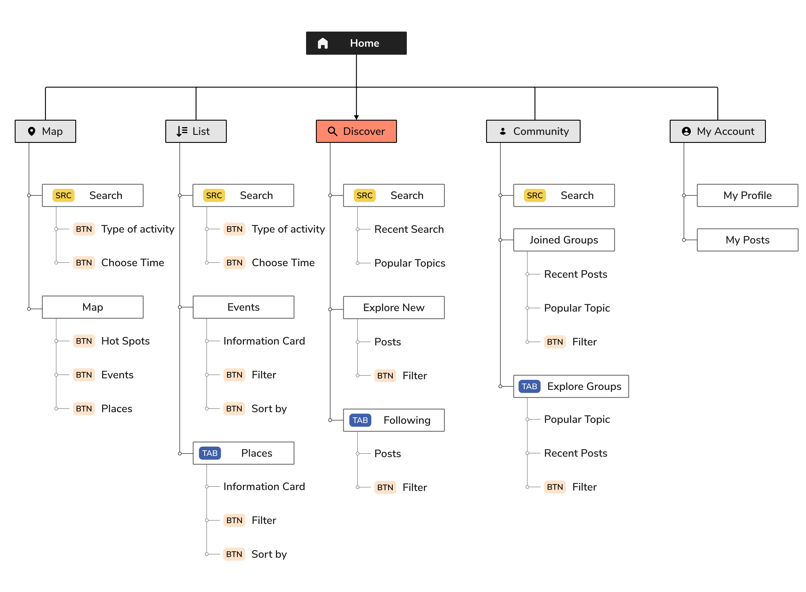

Do you find it challenging to find something fun to do without spending hours Googling and browsing websites? You are not the only one who feels this way - searching for trending events often requires users to use many different online sources such as Google, Eventbrite, Facebook Event, Instagram, etc. Besides, users need to use map apps, ticket apps, time and dates, etc., for checking details of the events or places. This process is time-consuming, laborious, and it can be very frustrating for many people.
In order to get a better understanding of the current event discovery apps, I looked into some of the researches and studies of the current industry, including Hugh Malkin's study and learning from Hugecity.
I learned 1) There are many ways for the back-end developers to collect event data through APIs and web scraping techniques, so the app doesn't necessarily rely on event organizers;
2) There are two types of typical users I need to consider in the design process: users who like to plan and people looking for things they can do right away.
I also conducted competitive studies on the most used app related to fun-discovery, including Google Map, Facebook Event, Facebook Local, Yelp, Eventbrite, Snap Map. Among all the apps mentioned, Facebook events and Facebook local are the most ideal ones to use when users are not looking for anything specific but fun stuff they can do to get out of their houses. (Note: Facebook Local app was no longer available since Jan 2021 after this research was conducted)
Competitive Analysis (click to see heuristic analysis for the apps)
In order to better understand the users' pain points and validate the idea, I designed questionnaires to 1) find target audiences to conduct interviews; 2) understand the challenges people have while looking for fun events and places.
Target Audience:
Based on the 26 responses I received from people aged between 23-35, I found 46.2% of them are proactively looking for fun things to do or places to go, while 42.3% of them having trouble finding the types of events they are interested in and 23.1% of people are not satisfied with the existing websites and apps.
Partial Survey Results
With the information I gathered through the survey, I got in touch with five people who are in my target group and conducted in-person and online interviews with them. Empathy mapping helped me realized what user think, say, do and feel can be different. I observed the user’s behavior during user interview to collect data which enabled me to think from the users’ perspective.
Interview Insights (click to see the empathy mapping)
By synthesizing the information I collected through research and interviews, I defined an actionable problem statement based on a deep understanding of the user’s specific needs.
I concluded my target users into two types of personas: Explorer Charlie and Follower Elizabeth. While Charlie is extrovert, adventurous, and social media-active, Elizabeth is introverted and cautious about her decision-making.
Persona 1: Explorer Charlie
Persona 2: Follower Elizabeth
With a general direction in mind (a fun-discovery app) and well-defined target users, I mapped out user journeys to help me with identifying design and innovation opportunities. I realized the opportunities of intervention occur primarily in the stages of 'searching for events' and 'sifting through events', where my interventions can help users quickly find different types of events with reliable reviews.
User Journey for Elizabeth(click to enlarge)
With the problem statement in mind, I began to think of different user stories and challenges, and possible solutions to solve the problem.
What can help users quickly find trending events? What are the current sources of information of my target users? How do I make the app interactive and engaging? etc. To keep track and organize my thoughts, I used Mind Map to write down my
ideas.
(click to see the Mind Map)
Allow users to discover and posts about others' experiences, check the events and places happening around users on the Map, form social groups
with users who share similar interests...I began to have some decent ideas that were worth pursuing.
I regularly check back with the user research and user personas to develop sets of user stories based on the features that users may want to see while using the app.
User Stories Map (click to enlarge)
The MVP is defined as following:
Based on the defined MVP, I started to map out information architecture and sketch different interface ideas.
While sketching different interfaces, I mapped out the first version of the site map to serve as guidance for the user flows and interface design.
The idea is that users can explore new things in different ways in each tab- 'Discover'
as the homepage to randomly explore, 'Map' to find things around us, 'List' to see everything based on different category users choose, 'Community' to get first-hand local news and fun things, 'My account' to keep track of the things users
saved.

Site Map Version1(click to enlarge)
I mapped out the most critical user flows I identified for the user stories.
1- Discover events and places by checking what other people are up to.
2- Share about their experience with the events or places.
3- Users go straight to the search bar and search for topics they are interested in.
4- Find what's happening around them on the map.
User Flows(click to enlarge)
With all the supporting work presented, I started to create multiple iterations of hand-drawn sketches before diving into wire-framing and prototyping. With many thoughts going on at the same time, hand sketches were the quickest way to express the ideas and get quick feedback, and help me narrow down the options I had in mind.
First hand-sketched iteration of the interfaces(click to enlarge)
I also made a very simple prototype from the ones that make the most sense and approached the users for some quick feedback. They were happy when they heard the concept and told me it could be pretty useful in solving their daily dilemmas with event findings. The general user flow was easy to understand, but I got questioned very often on the 'List' tab after they switched from the 'Map' tab. When users are on the list page, they got confused because are not sure about the differences between the result on the 'list' page and 'map' page.
'I'm not sure I would use all these tabs, the results seem to be very similar.'
'I would like to the see the map when I search on the 'list' page too.'
'It seems like a lot going on here... I don't know the differences between this and what I just saw.'
That was a great call! Considering different user scenarios to allow users to discover new things in different ways is a good thing, but it's important to make the interfaces easily learnable- I need to find a way to simplify the user flow and clearly differentiate them.
With this goal in mind, I made a new series of sketches for users to explore and search with 'map' and 'list' on the same page. The interface started to look cleaner and simplier.
Second round of iterations that focus on 'Search' and 'Explore'(click to enlarge)
With the improved user flows and interface sketches, I started to create wireframes and see how things look with better-defined spaces. The wireframes looked similar to the sketches at the beginning but started to vary as I keep coming up with better ways to organize the content for users to understand.
I created multiple versions of wireframes for the 'Map and List' page and was able to narrow down the options to the final three of them. This time, I decided to use Maze to conduct unmoderated user testing to see if how users are interacting with the prototype and help me decide the version to choose.
Opinions from users(click to enlarge)
Once there were no big flaws in the wireframes, I created a prototype that has the major user flows I wanted to cover in the app, and sent a link to users to get some quick feedback. The feedback I got in this round focuses more on the detail side of the interfaces. Some said the icons were too small, some said the space is too tight.
Revised Wireframes(click to enlarge)
Finally, with all the 'final' wireframes I created, I moved onto high-fidelity design phase. I made sure to check Material Design and the IOS guideline for size, color, and accessibility, etc.
Style Guide(click to enlarge)
With the high-fidelity design, I made a new prototype using Craft and Invision. And I conducted a round of user testing with 5 users who have never seen the design before. Meanwhile, I refered to IOS design guideline and material design guideline and modify the interfaces.

First version of High-fidelity Design(click to enlarge)
Some feedback from the users
I revised the interfaces and made sure the prototype can allow users to complete the most important tasks I identified:


{kind=link}
{kind=link}
{kind=link}
{kind=link}
{kind=link}
{kind=link}
{kind=link}
{kind=link}
{kind=link}
{kind=link}
{kind=link}
{kind=link}
{kind=link}